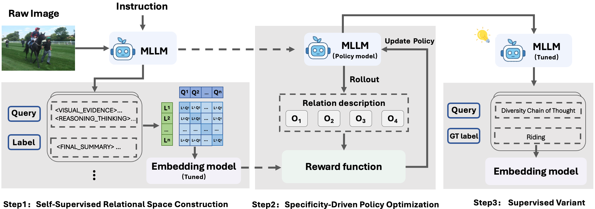
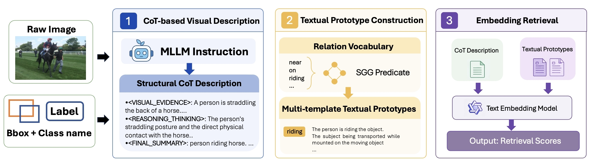
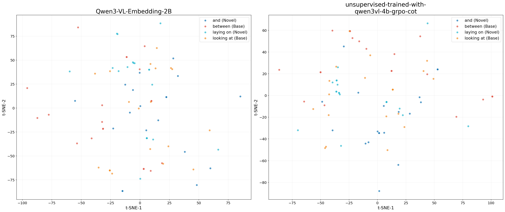
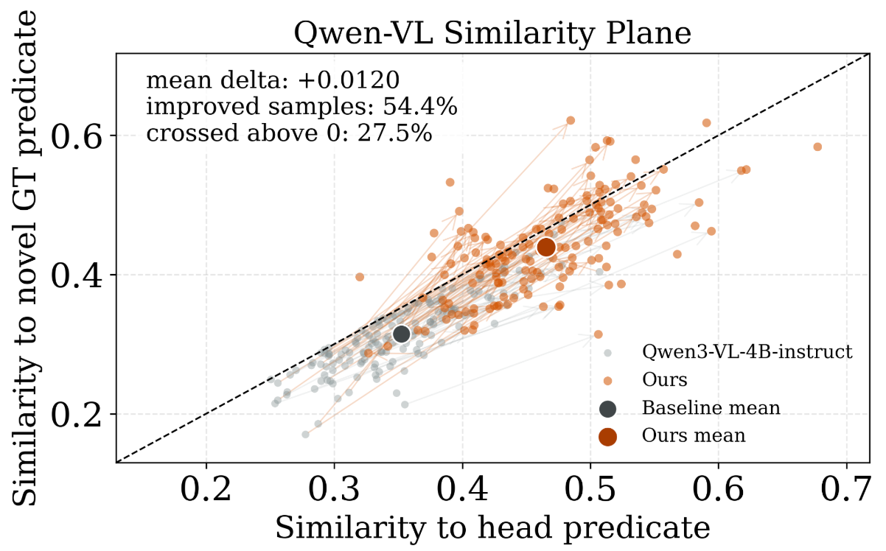
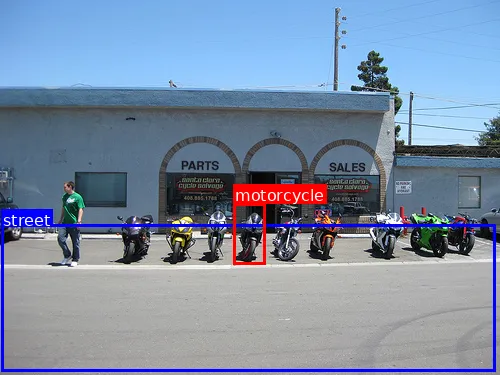
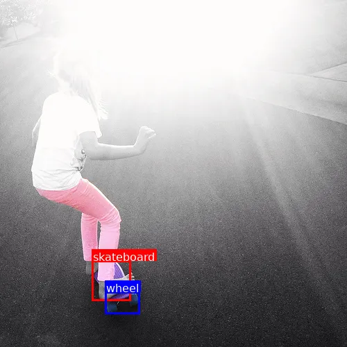

Transfer beyond labels
Instance-level rationales capture spatial layout, object attributes, action states, and contextual cues that transfer beyond a fixed predicate vocabulary.
Open-Vocabulary Scene Graph Generation (OV-SGG) requires models to recognize visual relationships beyond the training vocabulary, yet existing methods often rely on dataset-specific object–predicate co-occurrence patterns. Under long-tailed distributions and noisy object localization, such reliance produces biased, entangled relation representations and limits both rare-relation recognition and generalization to unseen predicates.
We propose RaRe, a reasoning-aware relational representation learning framework that transforms MLLM-generated chain-of-thought rationales into structured relation embeddings. RaRe first aligns rationale embeddings with textualized relation descriptions through self-supervised contrastive learning, then refines rationale generation with a specificity-oriented reinforcement learning objective that favors object-pair-specific relational evidence. Experiments on VG150 and PSG demonstrate improved category-balanced recognition, while revealing that the additional gains from learning and calibration vary across datasets and proposal settings.
Instance-level rationales capture spatial layout, object attributes, action states, and contextual cues that transfer beyond a fixed predicate vocabulary.
Contrastive alignment reshapes linguistically plausible but entangled CoT outputs into a retrieval-compatible relational embedding space.
Policy optimization penalizes responses shared across unrelated entity pairs and promotes distinctive, object-pair-specific evidence.

Each MLLM response naturally couples a CoT rationale with a relation prediction. A symmetric InfoNCE objective aligns these two views without requiring novel-predicate annotations.
The learned embedding model supplies a representation-aligned reward. Responses resembling outputs for other entity pairs receive lower rewards, steering GRPO toward specific relational evidence.
At inference, RaRe embeds the complete generated response and matches it against multi-template predicate prototypes, followed by lightweight score normalization and prior calibration.

VG150 evaluates both Predicate Classification (PredCls) and Scene Graph Detection (SGDet); PSG provides an additional detector-based evaluation.
| Method | Total mR@50/100 | Base mR@50/100 | Novel mR@50/100 |
|---|---|---|---|
| SGTR+ + RAHP | 16.88 / 22.18 | 20.51 / 25.18 | 11.82 / 15.46 |
| PE-NET + RAHP | 24.50 / 28.25 | 24.99 / 30.19 | 15.70 / 23.73 |
| RaRe | 24.62 / 25.80 | 25.53 / 26.45 | 22.49 / 24.27 |
| Dataset / Method | Total mR@50/100 | Novel mR@50/100 |
|---|---|---|
| VG150 · ACC | 4.30 / 5.11 | 2.48 / 3.17 |
| VG150 · ACC + RaRe | 10.38 / 12.32 | 6.69 / 8.02 |
| PSG · PGSG | 13.50 / 16.40 | 7.40 / 11.30 |
| PSG · PGSG + RaRe | 17.52 / 20.59 | 14.76 / 16.10 |
Under fixed ACC proposals on VG150, training-free MLLM retrieval explains most of the Total mR gain; adding SSL, RL, and prior calibration gives modest additional Total mR gains while reducing Novel mR. On PSG, the same-proposal ablation improves both Total and Novel mR. RaRe therefore reports these setting-dependent effects explicitly.

The improvements therefore do not rely on longer rationales; they come from making the generated evidence more specific and retrieval-compatible.



@inproceedings{xiao2026rare,
title={Reasoning-Aware Relational Representation Learning for Open-Vocabulary Scene Graph Generation},
author={Xiao, Jiawei and Wang, Boya and Qiu, Longtian and Ning, Shan and He, Xuming},
booktitle={Advances in Neural Information Processing Systems},
year={2026}
}